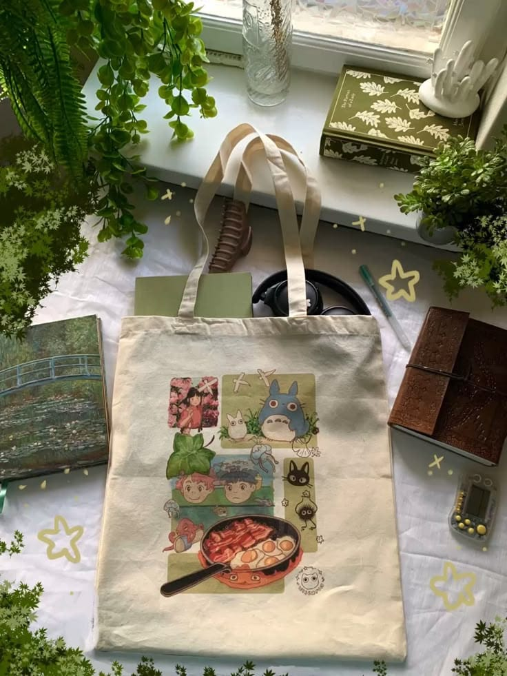
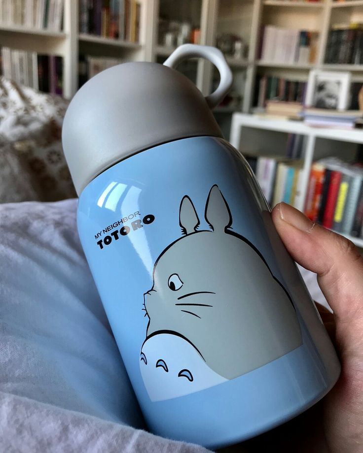
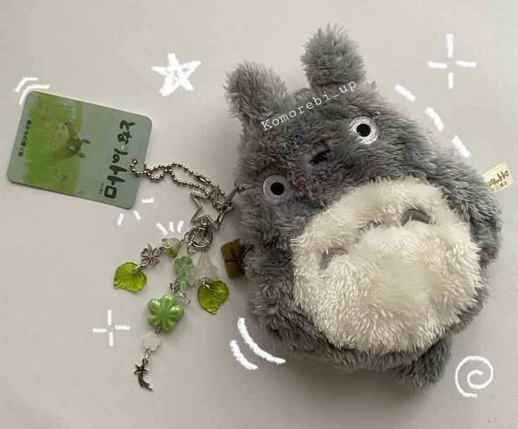

Dream Store
Home
about
Product
Contact
Totebag

Totebag adalah tas berbahan kain yang kuat dan ramah
digunakan sehari-hari. Tas ini cocok untuk membawa buku,
barang belanja, atau perlengkapan sekolah. Desainnya yang
simpel membuat totebag mudah dipadukan dengan berbagai gaya.
Tumbler

Tumbler merupakan botol minum yang praktis dan bisa digunakan
berulang kali. Produk ini membantu menjaga minuman tetap aman
dibawa ke mana saja, seperti ke sekolah atau saat bepergian.
Selain itu, penggunaan tumbler juga dapat mengurangi sampah
botol plastik.
Gantungan kunci

Gantungan kunci adalah benda kecil yang digunakan untuk mengelompokkan
dan membawa kunci agar lebih rapi, mudah ditemukan, dan tidak mudah hilang.
Selain fungsi praktis, gantungan kunci juga sering dipakai sebagai aksesoris
atau souvenir.